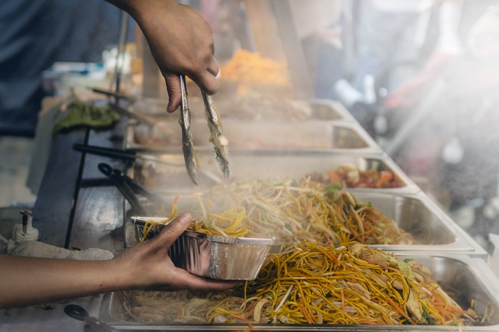
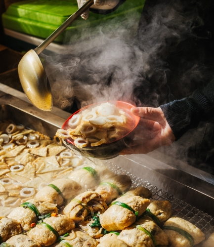

Learning to Love cooking
[The way we eat and cook and the things we eat and try have changed a lot in the last few years. More than ever we in the states have begun to branch out and try new things, stretching our comfort zones. So many of the things available to us today were so uncommon a few years ago. Now not only do we see curries and pitta bread in restaurants, but the ingredients and recipes are creeping into our own local supermarkets. Where in past years you may have only gone to Panda Express to get eggrolls and chow mien no you may go to a friend’s house and they make the same dishes we’ve come to love and they may even be better and have more of an authentic feel to them than what you’re used to getting from you local restaurant. Not only all this, but now foods that were hardly known in this country a few years ago are starting to gain a popularity. More than ever before there is so much to try and experience. ] [Not all of us are iron chef in the kitchen. If you’re here you might be new to cooking, experienced or looking for new and exciting things to try I personally believe that one of the greatest reasons we shy away from cooking and trying new things is fear. I think we’re afraid of cooking and it feels like a lot of work for something that might end of setting the kitchen ablaze or tasting like dirty dishwater when we’re through. The Goal of this sight will be to help you love cooking and nothing helps a person love cooking more than making something that they can be proud of and if it tastes amazing, well that definitely doesn’t hurt. The Key to loving cooking is loving the food and taking all the stress out of the experience. Putting yourself on a time crunch and trying to do everything at once leads to hating cooking. Cooking can be a place where you go to get away from the stress of the day to relax and decompress and make amazing food you love. I’m going to teach you to love cooking.] [If you’ve never branched out from the typical casseroles, spaghetti, salads with fruit in them, and my personal least favorite Hawaiian hay stacks then be prepared to dive into new experiences. Cooking authentic foods from other places may be different than what you’re used to but trust me they are well worth the experience. You’ll learn to cook authentic curry from Guyana and Vermicelli noodle bowls from Vietnam. We’ll teach you how to do it from scratch step by step, while giving you tips and tricks on how to make cooking fun and relaxing.]
Exotic Cookings Mission
This paragraph will talk abou the mission
 